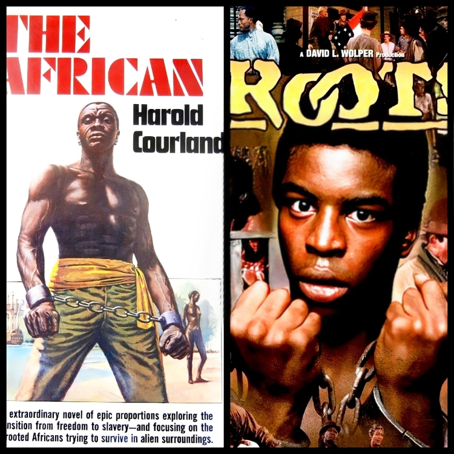

PLAIGIARISM
The term "plagiarism" has its roots in the Latin word "plagiarius," which translates to "kidnapper" or "abductor." Originally, it referred to someone who abducted a person or stole a slave, a practice that was common in Ancient Rome. The modern understanding of plagiarism, specifically regarding literary theft, began to emerge in the late 16th century.
The first recorded use of the term in a literary context can be traced back to the English playwright Ben Jonson, who employed it in his 1601 poem "Timber, or Discoveries." In this work, Jonson expressed his outrage at those who copied or appropriated the works of others, referring to them as "plagiators." Initially, there were no legal repercussions for such actions; it was more of an evolutionary trend where individuals took the artistic intelligence of others and presented it as their own. However, by the 18th and 19th centuries, with the rise of intellectual property concerns, plagiarism began to acquire increasingly negative ethical and legal connotations.
Famous Plagiarism Scandals
- JAYSON BLAIR (NEW YORK TIMES)
Jayson Blair joined The New York Times in 1999 as a young and ambitious journalist. He quickly gained recognition for his outstanding writing but fell from grace in 2003 when it was revealed that he had plagiarized and fabricated quotes, details, and even entire stories. His misconduct included using parts of wire reports and other journalists' work without credit, as well as inventing sources and events. His fabricated reports spanned national news, sports, and local events. - KARL-THEODOR ZU GUTTENBERG (GERMAN DEFENSE MINISTER)
Guttenberg entered politics swiftly, becoming the minister of economics and technology in 2009, and later the minister of defense. His rise was bolstered by his political and communication skills, as well as his appeal to younger voters. However, his career was derailed in 2011 when it was revealed that he had plagiarized his doctoral dissertation. The public was outraged, and as a result, Guttenberg resigned from his position as minister of defense. - ALEX HALEY (ROOTS)

Alex Haley, the writer of the Hollywood blockbuster "Roots," which tells the story of Kunta Kinte, an African captured by the British and brought to America as a slave, faced accusations of plagiarism shortly after the book's publication in 1970. He was sued for allegedly closely resembling the book "The Africa" by Courlander, who claimed that parts of his novel were reproduced verbatim. Courlander asserted that "Roots" recounted the story of his own ancestors’ journey to America. - MELANIA TRUMP
Melania Trump became embroiled in a plagiarism scandal due to her speech at the 2016 Republican National Convention. Many accused her of copying Michelle Obama’s speech word for word. The similarities were so apparent that they quickly attracted widespread media criticism from commentators and political analysts alike.
Plagiarism Punishment
| Plagiarism In Different Continent/Part Of The World | Punishment |
|---|---|
| Philippines | In the Philippines, plagiarism itself is not considered a crime, but when it constitutes copyright infringement under the Intellectual Property Code (IPC), it can be punishable by imprisonment ranging from 3-6 years and a fine between P50,000 - P150,000 depending on the severity of the offense; essentially meaning that plagiarism becomes punishable when it involves copying substantial portions of copyrighted material without proper attribution. |
| United States | While not necessarily treated as a criminal offense, plagiarism can result in severe academic consequences. Students may face penalties such as failing a course, suspension, expulsion, and, in extreme cases, legal action for copyright infringement. |
| United Kingdom | Plagiarism can lead to significant fines, particularly in professional contexts, and can severely damage one’s academic or professional reputation. |
| China | There are high rates of reported plagiarism in academic research, prompting some universities to implement strict disciplinary actions against students and researchers who are caught plagiarizing. |
| India: | In certain cases, plagiarism has led to legal action, which may include potential jail time, depending on the severity and context of the offense. |